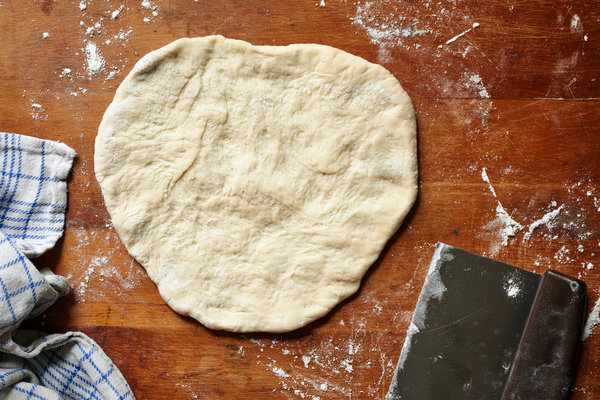

Sourdough Pizza Dough

Description
A yummy stretchy dough that bakes up crisp and flavorful.
Add your favorite pizza toppings or bake on its own it's lovely either way.
Ingredients
- 5cups/500 grams 00 flour
- 2½teaspoons/15 grams kosher salt
- 2½teaspoons/7.5 grams instant dry yeast
- 1tablespoon/15 grams extra-virgin olive oil
- ¼cup plus 2 tablespoons/90 grams sourdough starter, “fed”
Steps
- In a large mixing bowl, combine the flour and salt.
- In a small mixing bowl, stir together 300 grams (about 1¼ cups)
lukewarm tap water, the instant dry yeast and the olive oil, then
stir the sourdough starter into it and pour it into the bowl with the
flour mixture. Knead with your hands until well combined, about 4 minutes,
then let mixture rest for 15 minutes.
- Knead rested dough for 3 to 4 minutes. Cut into 3 equal pieces and shape
each into a ball. Place on a heavily floured surface, cover with a dampened
cloth and let rest and rise for 8 to 24 hours in the refrigerator.
(Remove from refrigerator 30 to 45 minutes before you begin to shape
it for pizza.)
- To make pizza, place each dough ball on a heavily floured surface and use
your fingers to stretch it, then your hands to shape it into rounds or squares.
Top and bake.